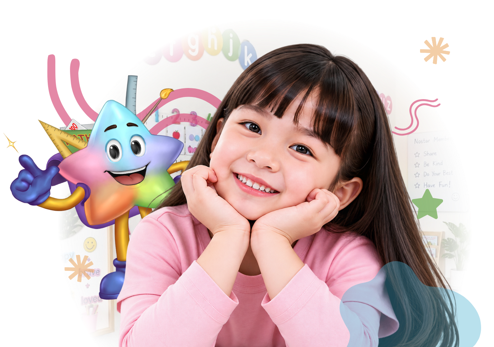

Sensory Phonics
Usia 3 – 4 tahunPengenalan phonics dengan pendekatan multisensory untuk membangun kesiapan membaca sejak dini.
Lihat Detail →Kami membantu anak-anak mengembangkan kemampuan membaca, menulis, berhitung, Bahasa Indonesia, dan Bahasa Inggris melalui pembelajaran yang menyenangkan, interaktif, dan didampingi guru profesional.

Berbagai program belajar menarik untuk mendukung perkembangan akademik dan non-akademik anak.
Pengenalan phonics dengan pendekatan multisensory untuk membangun kesiapan membaca sejak dini.
Lihat Detail →
Program phonics bertahap untuk membangun kemampuan membaca dengan percaya diri.
Lihat Detail →
Program membaca, menulis, dan berhitung dengan level Pintar 1–4.
Lihat Detail →
Dasar matematika melalui pendekatan menyenangkan.
Lihat Detail →
Review materi sekolah dan bantuan homework dengan pendekatan yang mudah dipahami.
Lihat Detail →
Mengembangkan kemampuan Bahasa Inggris: Speaking, Listening, Reading, Writing, Grammar, dan Vocabulary.
Lihat Detail →Guru profesional dan berpengalaman dalam mendidik anak.

Belajar jadi menyenangkan dengan metode yang interaktif dan kreatif.

Siswa kami telah meraih berbagai prestasi di tingkat sekolah maupun lomba.
Lingkungan belajar yang aman, nyaman, dan ramah untuk anak-anak.
Pengalaman nyata dari orang tua yang telah merasakan perubahan positif pada anak mereka.
Anak saya jadi lebih percaya diri setelah bergabung di BEST KIDS. Guru-gurunya sangat sabar dan cara mengajarnya menyenangkan.
Programnya sangat terstruktur dan sesuai dengan kebutuhan anak. Kami melihat perkembangan yang signifikan, terutama dalam kemampuan membaca.
Anak saya selalu antusias setiap kali jadwal belajar di BEST KIDS. Lingkungannya positif, gurunya ramah, dan komunikatif dengan orang tua.
Pertanyaan yang sering diajukan oleh orang tua.
Temukan jawaban untuk membantu Anda mengenal BEST KIDS lebih dekat.
.png)

Daftarkan sekarang dan dapatkan pengalaman belajar berkualitas di BEST KIDS Learning Center.